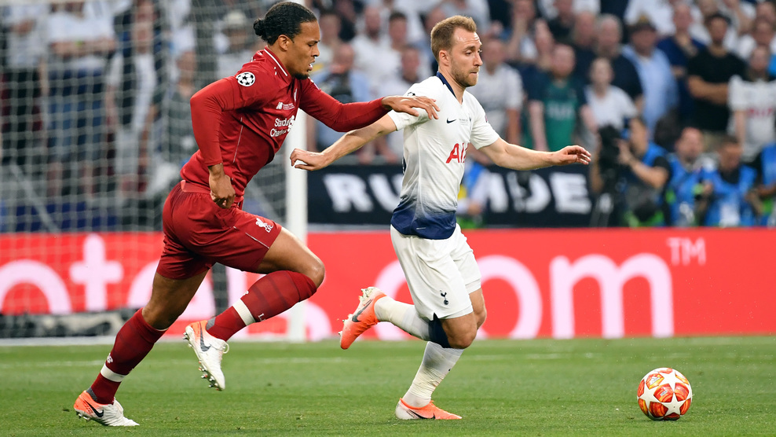
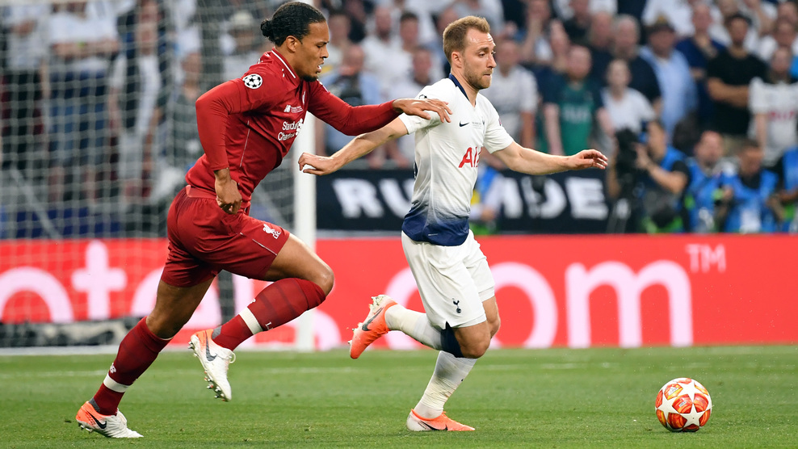

Матч був моментом істини і для Салаха, який в київському фіналі 2018 року залишив поле через травму вже в дебюті. У Мадриді він холоднокровно реалізував пенальті, призначений вже на 24-й секунді за гру рукою Муси Сіссоко.
Швидким голом Салаха справа не обмежилася. "Ліверпуль", хоч і віддав м'яч, шукав щастя в атаці. Небезпечними залпами видали запам'яталися Трент Александер-Арнолд і Енді Робертсон. У "Тоттенхема" двічі в відрив тікав Сон Хин Мін, але в цілому напад "шпор" нічого серйозного в першому таймі не показало.Напір "Тоттенхема" став куди більш усвідомленим після перерви. Справі Аллі пробив головою вище воріт, а з найгострішими ударами Сона і Лукаса Моур впорався Аліссон. У червоних до голу був близький вийшов на заміну Джеймс Мілнер. Без другого м'яча "Ліверпуль" вечір не закінчив. Ориги поставив крапку потужним ударом низом на 87-й хвилині.
Челсі" смів "Арсенал" у другому таймі фіналу Ліги Європи УЄФА в Баку. Мауріціо Сарри завоював перший трофей в кар'єрі тренера.На перших порах "Челсі" більше контролював м'яч, але гостріше атакував "Арсенал". П'єр-Емерік Обамеянг пробив з непоганої позиції повз ворота. Потужним ударом з дистанції "дев'ятку" ледь не вразив Граніт Джака.Петра Чеха навантажили роботою вже в кінцівці тайму. Кіпер "Арсеналу", який проводив останній матч в кар'єрі, спочатку відбив удар Емерсона, а потім зробив сейв після пострілу Олів'є Жиру в дальній кут.
Все змінилося після перерви. Уже в дебюті тайму Жиру відірвався в стрибку від Лорана Косьельні і пробив-таки Чеха ударом головою в падінні. В результаті француз з 11 голами став найкращим бомбардиром Ліги Європи.Після цього на авансцену вийшов Еден Азар. На 60-й хвилині з його пасу Педро Родрігес подвоїв рахунок. Ще п'ять хвилин по тому бельгієць реалізував пенальті, зароблений Жиру. Чудовий дальній удар вийшов на заміну Алекса Івобі міг відродити інтригу, але майже відразу Азар зробив дубль.
 
